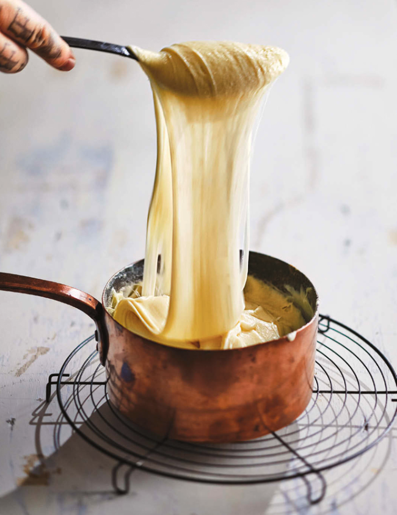

Aligot Potatoes, or Cheesy Stringy Potatoes

Description
Potatoes can be used in so many ways: gnocchi, French fries, smashed potatoes, mashed potatoes, potato
dauphinois, pomme puree, and, what I feel is the highest form of potatory, the aligot. When made well, it should
be very smooth. I hate mealy aligot potatoes that happen when the potatoes aren't hot enough and are overworked
at low temperature. I think making aligot potatoes and making the Infamous Cheesy Citrus Refried Beans are very
similar. You have to get the texture of your base just right before adding the cheese. Too much butter or fat or
milk or juice and the whole operation could go sideways. Please follow the instructions and you will have
perfect ribbons of cheesy potatoes, and maybe the key really is using the cheapest pre-shredded mozzarella,
because I truly think that's the best kind.
Ingredients
- 4 Yukon Gold potatoes, peeled and quartered Kosher salt
- 1 cup (240 ml) heavy cream, warmed
- 1/2 cup (1 stick/115 g) unsalted butter
- 1 pound (450 g) fresh cheese curds
- 1/2 pound (225 g) fresh mozzarella cheese
- 1 teaspoon freshly ground white pepper
Cooking Instructions
- Place the potatoes in a medium pot and add water to cover by 2 inches (5 cm).
- Add salt so the water is nice and salty; bring to a boil over high heat, then turn down to maintain a light simmer.
- Cook until the potatoes are fork-tender, 15 to 20 minutes.
- Drain the potatoes through a colander.
- Immediately pass the potatoes through a food mill and back into the pot.
- Set the pot over super low heat and stir in the warm cream and butter.
- Add half of each cheese, melt, then stir in the remaining cheeses.
- Continue stirring until the potatoes can be stretched with a spoon like melted mozzarella.
- Season with salt and the white pepper.
- Serve warm.